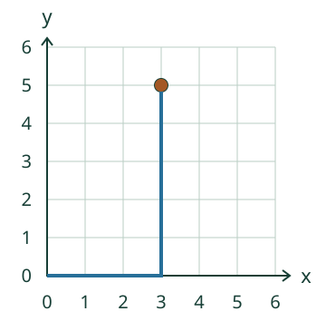

Loikan aarre: ensin x oikealle, sitten y ylös.
Katso erillinen esimerkki (3, 5)
Mieti ensin: kumpi luku määrää vaakasuunnan? Malli ei täytä vastaustasi.
Näin paikka löytyy
Kätke aarre tarkkaan paikkaan
Loikka antaa paikan (4, 2). Vie merkki oikeaan risteykseen. Ensimmäinen luku kertoo x:n, toinen y:n.
Yksi väli on yksi askel. Napauta viivojen risteystä, älä ruudun keskusta.
Origossa (0, 0) akselit risteävät. X kasvaa oikealle, y ylöspäin. Luku kertoo välien määrän, ei laskettavien viivojen määrää.
Esimerkki: (3, 5)
Lähde nollasta. Kolme väliä oikealle vie x:n kohdalle 3. Viisi väliä ylös vie y:n kohdalle 5. Merkitse niiden risteys.

Nolla on mukana: (4, 0)
Neljä oikealle, ei yhtään ylös. Piste on vaaka-akselilla. (0, 3) taas on pystyakselilla.

Uusi lähtöpaikka: laiva
Laiva on (1, 2). Siitä kolme oikealle ja kaksi ylös vie kohtaan (4, 4): 1 + 3 on 4 ja 2 + 2 on 4. Annettu siirtymä lähtee laivasta; lopulliset koordinaatit luetaan silti origosta.
Lisätutkimus ja paperikartta
Merkitse (2, 4) ja (4, 2). Vaihda merkitsemisjärjestystä. Paikat eivät muutu. Tee paperille ruudukko ja anna toiselle kaksi koordinaattia ilman esineiden nimeämistä.
Lopuksi: Missä (0, 0) on? Miksi (4, 0) ei ole sama kuin (0, 4)?
Opettajalle: tavoite ja rajat
Luokat 3–6. Vaaditut esitiedot M-GEO-02 ja M-NUM-07. Tavoite on annetun pisteen sijoittaminen, ei READ-kohteen tai laajan koordinaattirubriikin hyväksyntä. Ruudukko käyttää kokonaislukuja 0–6 ja yksikkövälejä; negatiiviset ja murto-osakoordinaatit eivät kuulu tähän.
Tarkasti I neljänneksen sisällä x > 0 ja y > 0. Akselit ja origo käsitellään näkyvästi sen rajatapauksina. Sormi voi seurata välejä; origon erillistä napautusta tai ääneen vastaamista ei vaadita. Syöttökentät ja nuolinäppäimet tarjoavat vaihtoehdon pienille risteyksille.
Piirtoapu näyttää saman säännön ja on tuettua harjoittelua. Paikallinen palaute ei osoita itsenäistä tai pysyvää osaamista, muistamista, fyysistä kartankäyttöä tai formaalia hallintaa. Ei oppilashistoriaa. Aikuinen saa lukea ohjeet.